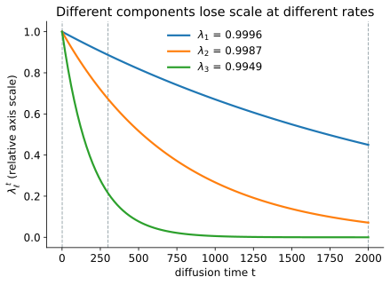

3 Mathematics of diffusion maps
A diffusion map starts with pairwise distances and ends with coordinates that represent diffusion distance. The full coordinate set gives the distance exactly, while a truncated set gives an approximation. The construction has four parts:
- Convert local distances into transition probabilities.
- Use powers of the transition matrix to describe walks of several steps.
- Compare the resulting endpoint distributions with diffusion distance.
- Express that distance with eigenvectors and eigenvalues.
The same five observations are used throughout the derivation:
\[x = (0, 1, 2, 4, 5).\]
Observations 1, 2, and 3 form one close group. Observations 4 and 5 form another. The gap between observations 3 and 4 is 2, while the other adjacent gaps are 1. This uneven spacing provides a small example of two regions connected more weakly than observations within either region.
3.1 From distances to transition probabilities
3.1.1 Pairwise distance
Let \(x_1,\ldots,x_n\) be observations in \(p\) dimensions. Their Euclidean distances are
\[r_{ij} = \lVert x_i - x_j \rVert.\]
Here \(n=5\) and \(p=1\), so \(r_{ij}=|x_i-x_j|\). The distance matrix is
\[r = \begin{pmatrix} 0 & 1 & 2 & 4 & 5 \\ 1 & 0 & 1 & 3 & 4 \\ 2 & 1 & 0 & 2 & 3 \\ 4 & 3 & 2 & 0 & 1 \\ 5 & 4 & 3 & 1 & 0 \end{pmatrix}.\]
The construction treats short distances as reliable local comparisons. Long distances are not discarded because they are numerically wrong. They are given little direct influence because they do not describe how the observations between the two endpoints are connected.
3.1.2 Similarity kernel
A Gaussian kernel converts distance into similarity:
\[K_{ij} = \exp\!\left(-\frac{r_{ij}^2}{\epsilon}\right).\]
The bandwidth \(\epsilon\) controls how quickly similarity decreases. The numerical example uses \(\epsilon=2\). A distance of 0 gives similarity 1, a distance of 1 gives \(\exp(-1/2)=0.607\), and a distance of 5 gives about \(4\times10^{-6}\).
The kernel matrix is
\[K = \begin{pmatrix} 1 & 0.6065 & 0.1353 & 0.0003 & 0.0000 \\ 0.6065 & 1 & 0.6065 & 0.0111 & 0.0003 \\ 0.1353 & 0.6065 & 1 & 0.1353 & 0.0111 \\ 0.0003 & 0.0111 & 0.1353 & 1 & 0.6065 \\ 0.0000 & 0.0003 & 0.0111 & 0.6065 & 1 \end{pmatrix}.\]
The direct similarities \(K_{13}\) and \(K_{34}\) are both 0.1353 because both pairs are separated by distance 2. The kernel alone does not distinguish a pair inside the first group from a pair that crosses the larger gap. That distinction will come from their connections to the other observations.
Some software writes the denominator as \(2\sigma^2\) instead of \(\epsilon\). These are two parameterizations of the same kernel.
3.1.3 Local graph
Large datasets normally retain only the \(k\) nearest neighbors of each observation. The graph is then symmetrized so that the retained connections can be treated consistently in both directions.
The neighbor count and the bandwidth have different roles:
- \(k\) determines which edges exist.
- \(\epsilon\) determines the weight of an existing edge.
The five observation example keeps the full kernel because every entry can be displayed. Chapter 2 uses sparse neighbor graphs for the larger simulated dataset.
3.1.4 Sampling density
The row sum of the kernel is
\[q_i = \sum_j K_{ij}.\]
For the example,
\[q = (1.742, 2.224, 1.888, 1.753, 1.618).\]
\(q_i\) measures how much kernel similarity surrounds observation \(i\). Observation 2 has the largest value because it lies close to observations 1 and 3. Observation 5 has the smallest value because it has only one close neighbor.
These row sums reflect both the shape of the data and how densely that shape was sampled. A densely sampled region can receive stronger total connectivity even when density is not the feature the analysis is intended to preserve.
3.1.5 Density normalization
Density normalization adjusts the kernel before it is turned into transition probabilities:
\[K_{ij}^{(\alpha)} = \frac{K_{ij}}{q_i^\alpha q_j^\alpha}.\]
The parameter \(\alpha\) controls how much the original sampling density affects the final graph:
- \(\alpha=0\) leaves the kernel unchanged.
- \(\alpha=1\) applies the strongest correction among these common choices.
- \(\alpha=1/2\) gives an intermediate correction.
No value is appropriate for every application. If density differences are technical, reducing their influence can help. If density is scientifically meaningful, a strong correction can remove relevant structure.
Using \(\alpha=1/2\) gives
\[K^{(1/2)} = \begin{pmatrix} 0.574 & 0.308 & 0.075 & 0.000 & 0.000 \\ 0.308 & 0.450 & 0.296 & 0.006 & 0.000 \\ 0.075 & 0.296 & 0.530 & 0.074 & 0.006 \\ 0.000 & 0.006 & 0.074 & 0.570 & 0.360 \\ 0.000 & 0.000 & 0.006 & 0.360 & 0.618 \end{pmatrix}.\]
Density normalization changes what the edge weights represent. A separate row normalization is still needed to turn those weights into probabilities.
3.1.6 Transition matrix
Let
\[d_i = \sum_j K_{ij}^{(\alpha)}.\]
Divide each row by its sum:
\[P_{ij} = \frac{K_{ij}^{(\alpha)}}{d_i}.\]
Every row now sums to 1:
\[\sum_j P_{ij} = \frac{\sum_j K_{ij}^{(\alpha)}}{d_i} = 1.\]
\(P_{ij}\) is the probability of moving from observation \(i\) to observation \(j\) in one step. The matrix \(P\) is the transition matrix:
\[P = \begin{pmatrix} 0.600 & 0.322 & 0.078 & 0.000 & 0.000 \\ 0.291 & 0.424 & 0.279 & 0.005 & 0.000 \\ 0.076 & 0.302 & 0.540 & 0.076 & 0.007 \\ 0.000 & 0.006 & 0.074 & 0.564 & 0.356 \\ 0.000 & 0.000 & 0.007 & 0.366 & 0.628 \end{pmatrix}.\]
Row 3 shows the possible moves from observation 3. The walk remains at observation 3 with probability 0.540, moves to observation 2 with probability 0.302, and moves across the larger gap to observation 4 with probability 0.076.
\(P\) can also act on a vector of values \(f=(f_1,\ldots,f_n)^\top\) assigned to the observations:
\[(Pf)_i = \sum_j P_{ij}f_j.\]
Because the weights in row \(i\) sum to 1, \((Pf)_i\) is a weighted average of the values available from observation \(i\). This neighbor averaging interpretation will be used when eigenvectors are introduced.
3.2 Walking for several steps
3.2.1 Two steps
To move from \(i\) to \(j\) in two steps, the walk must pass through an intermediate observation \(k\). The probability of the route \(i\to k\to j\) is
\[P_{ik}P_{kj}.\]
Summing over every possible intermediate observation gives
\[\sum_k P_{ik}P_{kj} = (P^2)_{ij}.\]
For the route from observation 1 to observation 5,
\[(P^2)_{1,5} = \sum_k P_{1k}P_{k5} = 0.000633.\]
The one step probability \(P_{1,5}\) rounds to zero in the displayed matrix. Two steps allow routes through intermediate observations and therefore give a larger probability.
3.2.2 From two steps to \(t\) steps
The same multiplication gives three steps, four steps, and any later number of steps:
\[(P^t)_{ij} = \Pr(X_t=j\mid X_0=i).\]
This entry sums the probabilities of every route of length \(t\) from \(i\) to \(j\). It is not a shortest path calculation. Routes that pass through many well connected alternatives contribute more total probability than an isolated route.
3.2.3 Where diffusion enters the construction
Constructing \(P\) defines only one random walk step. The diffusion process is the repeated propagation of probability through
\[P,\quad P^2,\quad P^3,\quad\ldots,\quad P^t,\]
where \((P^t)_{ij}\) is the probability of reaching observation \(j\) after starting at observation \(i\) and taking \(t\) steps. The conceptual sequence is
\[\text{local similarity} \longrightarrow \text{one step transition matrix} \longrightarrow \text{repeated propagation through }P^t \longrightarrow \text{diffusion distance} \longrightarrow \text{diffusion coordinates}.\]
The eigendecomposition is not the diffusion. It represents repeated diffusion efficiently because
\[P^t\psi_k=\lambda_k^t\psi_k.\]
Plotting unweighted eigenvectors of \(P\) gives a spectral embedding of the graph. A diffusion map additionally defines similarity through the \(t\) step endpoint distributions and uses the coordinates
\[\left( \lambda_1^t\psi_1(i), \lambda_2^t\psi_2(i), \ldots \right)\]
to represent the corresponding diffusion distance.
Diffusion occurs through repeated random walk propagation. The eigenvectors and eigenvalues provide a compact coordinate system for the resulting diffusion geometry.
3.2.4 Endpoint distributions
For a fixed starting observation \(i\), the row \(P^t_{i,:}\) is the distribution of possible endpoints after \(t\) steps. The one step and five step matrices are
\[P^1 = \begin{pmatrix} 0.600 & 0.322 & 0.078 & 0.000 & 0.000 \\ 0.291 & 0.424 & 0.279 & 0.005 & 0.000 \\ 0.076 & 0.302 & 0.540 & 0.076 & 0.007 \\ 0.000 & 0.006 & 0.074 & 0.564 & 0.356 \\ 0.000 & 0.000 & 0.007 & 0.366 & 0.628 \end{pmatrix}, \qquad P^5 = \begin{pmatrix} 0.333 & 0.338 & 0.265 & 0.044 & 0.021 \\ 0.306 & 0.326 & 0.271 & 0.061 & 0.036 \\ 0.258 & 0.293 & 0.263 & 0.104 & 0.081 \\ 0.042 & 0.064 & 0.101 & 0.387 & 0.406 \\ 0.020 & 0.039 & 0.081 & 0.417 & 0.444 \end{pmatrix}.\]
At \(t=1\), the rows remain strongly concentrated near their starting observations. At \(t=5\), rows 1, 2, and 3 have become more similar to one another. Rows 4 and 5 have also become more similar. The difference between the two groups remains because probability crosses the gap less readily than it moves within either group.
Increasing diffusion time removes distinctions within strongly connected regions before it removes distinctions between weakly connected regions.
3.2.5 Diffusion time
The number of steps \(t\) is called diffusion time. It is a count of graph transitions, not elapsed experimental or biological time.
Small values of \(t\) retain local detail. Moderate values allow local differences to mix while broader connectivity patterns remain. Very large values eventually remove all information about the starting observation when the graph is connected and mixing.
The value of \(t\) appears in both \(P^t\) and diffusion distance. Choosing one fixed \(t>1\) is not required by every software workflow. Packages often return eigenvectors and eigenvalues, which are enough to construct coordinates for any \(t\). A fixed value is most useful when an analysis needs geometry at a selected propagation scale.
3.2.6 Stationary distribution
A probability distribution over the observations is written as a row vector \(\mu^\top\). After one step it becomes
\[\mu^\top P,\]
and after \(t\) steps it becomes
\[\mu^\top P^t.\]
Starting at one observation is a special case. If \(e_i^\top\) places all probability on observation \(i\), then
\[e_i^\top P^t = P^t_{i,:}.\]
This is why the rows of \(P^t\) are endpoint distributions.
A stationary distribution is a probability distribution that does not change after another step. It is written \(\pi^\top\) and satisfies
\[\pi^\top P = \pi^\top.\]
For the graph construction used here, let
\[Z=\sum_j d_j.\]
The stationary probability of observation \(i\) is
\[\pi_i = \frac{d_i}{Z}.\]
The reason is the symmetry of \(K^{(\alpha)}\). Since
\[\begin{aligned} d_iP_{ij} &= K_{ij}^{(\alpha)}, \\ d_jP_{ji} &= K_{ji}^{(\alpha)}, \end{aligned}\]
symmetry gives
\[\pi_iP_{ij} = \frac{K_{ij}^{(\alpha)}}{Z} = \frac{K_{ji}^{(\alpha)}}{Z} = \pi_jP_{ji}.\]
This equality is called detailed balance. At stationarity, the probability flow from \(i\) to \(j\) is balanced by the flow from \(j\) to \(i\). Summing over \(i\) gives
\[\sum_i \pi_iP_{ij}=\pi_j,\]
which is the stationary equation \(\pi^\top P=\pi^\top\).
For the five observation example,
\[\pi = (0.192, 0.212, 0.196, 0.202, 0.197).\]
These values are close to uniform because the five row sums \(d_i\) are similar. On a graph with more uneven connectivity, the stationary distribution places more mass in regions with larger \(d_i\).
When the graph is connected and the walk is mixing, every initial distribution approaches \(\pi\). In this example, every row of \(P^{200}\) agrees with \(\pi\) to four decimal places. After that many steps, the endpoint distribution no longer records where the walk began.
The transition matrix will now appear in two forms. The distinction explains why the stationary distribution is a left eigenvector while diffusion components are right eigenvectors.
| Object acted on by \(P\) | Operation | Interpretation |
|---|---|---|
| Probability row \(\mu^\top\) | \(\mu^\top P\) | Move probability forward by one step |
| Value pattern \(f\) | \(Pf\) | Average future values over the possible next steps |
The stationary distribution satisfies \(\pi^\top P=\pi^\top\), so it is a left eigenvector with eigenvalue 1. A right eigenvector satisfies \(P\psi=\lambda\psi\) and describes a value pattern over the observations. Reversibility, expressed by detailed balance, connects these two views.
The stationary distribution is not a separate side calculation. It has two roles below. It gives the long run baseline used to compare endpoint probabilities, and it supplies the weights under which the right eigenvectors become orthogonal.
3.3 Diffusion distance
Two starting observations are similar in diffusion geometry when their endpoint distributions are similar. An unweighted comparison would be
\[\sum_k \left(P^t_{ik}-P^t_{jk}\right)^2.\]
This gives the same weight to every destination. Destinations with large stationary probability are visited often from many starting points, so a difference there carries less information about the start. Diffusion distance accounts for this baseline frequency by dividing the squared difference at destination \(k\) by \(\pi_k\):
\[\boxed{ D_t^2(i,j) = \sum_k \frac{\left(P^t_{ik}-P^t_{jk}\right)^2}{\pi_k}. }\]
The same absolute difference therefore counts less at a common destination with large \(\pi_k\) and more at a less common destination with small \(\pi_k\). This adjustment matters most when the stationary distribution is uneven. In this example, \(\pi\) is nearly uniform, so the weighting is close to a common rescaling.
At \(t=1\),
\[D_1(1,3)=1.596, \qquad D_1(3,4)=1.830, \qquad D_1(1,5)=2.247.\]
The raw distances \(r_{13}\) and \(r_{34}\) are both 2. Their diffusion distances differ. Observations 1 and 3 lie within the same well connected region, while observations 3 and 4 lie on opposite sides of the weaker connection. Diffusion distance includes the surrounding routes, not only the direct distance between the pair.
\(D_t\) depends on diffusion time. Changing \(t\) changes the endpoint distributions and therefore changes the geometry being measured.
3.4 Components as patterns on the graph
3.4.1 Why right eigenvectors appear
The rows of \(P^t\) describe how probability moves from each starting observation. Comparing those rows directly requires \(n\) values for every start. The aim is to summarize their main differences with fewer numbers.
To do this, consider a column vector \(f\) that assigns one value to every observation. The \(i\)th entry of \(Pf\) is
\[(Pf)_i = \sum_j P_{ij}f(j).\]
This is the expected value of \(f\) after one step when the walk starts at observation \(i\):
\[(Pf)_i = \mathbb{E}\!\left[f(X_1)\mid X_0=i\right].\]
Probability distributions move from the left as \(\mu^\top P\). Value patterns are evaluated from the right as \(Pf\). Diffusion components use the second operation because a component assigns a value to each observation.
Now suppose that the value pattern is a right eigenvector \(\psi_\ell\):
\[P\psi_\ell = \lambda_\ell\psi_\ell.\]
For every starting observation \(i\), this means
\[(P\psi_\ell)_i = \mathbb{E}\!\left[\psi_\ell(X_1)\mid X_0=i\right] = \lambda_\ell\psi_\ell(i).\]
The neighbor average has the same pattern as \(\psi_\ell\), multiplied by \(\lambda_\ell\). If \(\lambda_\ell\) is close to 1, one transition changes the pattern little. Strongly connected observations therefore tend to have similar component values.
A pattern that alternates sharply between neighboring observations is changed substantially by averaging. It receives a smaller eigenvalue and loses influence more quickly under repeated diffusion.
A right eigenvector is therefore useful for two related reasons. It assigns one coordinate value to each observation, and its evolution through repeated random walk steps is easy to calculate. A diffusion eigenvalue is not explained variance. It measures how strongly the corresponding graph pattern survives one transition step.
3.4.2 Repeated averaging
Applying \(P\) twice gives
\[P^2\psi_\ell = P(P\psi_\ell) = P(\lambda_\ell\psi_\ell) = \lambda_\ell^2\psi_\ell.\]
After \(t\) steps,
\[\boxed{ P^t\psi_\ell = \lambda_\ell^t\psi_\ell. }\]
For a walk starting at observation \(i\),
\[\mathbb{E}\!\left[\psi_\ell(X_t)\mid X_0=i\right] = \lambda_\ell^t\psi_\ell(i).\]
The starting value \(\psi_\ell(i)\) tells us where observation \(i\) lies on the pattern. The factor \(\lambda_\ell^t\) tells us how much of that pattern remains after \(t\) steps.
Consider three illustrative eigenvalues:
\[\lambda_1=0.98, \qquad \lambda_2=0.80, \qquad \lambda_3=0.25.\]
Their powers are
\[\begin{array}{c|ccc} t & \lambda_1^t & \lambda_2^t & \lambda_3^t \\ \hline 1 & 0.980 & 0.800 & 0.250 \\ 5 & 0.904 & 0.328 & 0.001 \\ 20 & 0.668 & 0.012 & 0.000 \\ 50 & 0.364 & 0.00001 & 0.000 \end{array}\]
The first pattern remains visible over many steps. The third is nearly absent by \(t=5\). This persistence determines the usual ordering of diffusion components. The first nontrivial components correspond to patterns that repeated diffusion removes most slowly. Later components can still represent meaningful structure, but they disappear faster.
3.4.3 Constant component
Every row of \(P\) sums to 1, so
\[P\mathbf{1}=\mathbf{1}.\]
The constant vector is therefore a right eigenvector with eigenvalue 1:
\[\lambda_0=1, \qquad \psi_0=\mathbf{1}.\]
It assigns the same value to every observation and cannot separate them. Diffusion embeddings omit this component.
The constant right eigenvector and the stationary distribution have different roles. \(\mathbf{1}\) is unchanged when \(P\) acts on a pattern from the right. \(\pi^\top\) is unchanged when a probability distribution acts on \(P\) from the left:
\[P\mathbf{1}=\mathbf{1}, \qquad \pi^\top P=\pi^\top.\]
Some software stores the constant component as column 0. The practical chapter shows this behavior in Scanpy.
If the graph has several disconnected pieces, eigenvalue 1 occurs once for each piece. Several eigenvalues extremely close to 1 can indicate regions that communicate only weakly.
3.4.4 Symmetric form used for computation
\(P\) is generally not symmetric, so its right eigenvectors need not be orthogonal under the ordinary Euclidean inner product. Detailed balance supplies a different inner product that matches the random walk:
\[\langle f,g\rangle_\pi = \sum_i f(i)g(i)\pi_i.\]
Under this weighted inner product, \(P\) behaves like a symmetric operator:
\[\langle f,Pg\rangle_\pi = \langle Pf,g\rangle_\pi.\]
To see this, expand the left side and use detailed balance:
\[\begin{aligned} \langle f,Pg\rangle_\pi &= \sum_{i,j} f(i)P_{ij}g(j)\pi_i \\ &= \sum_{i,j} f(i)P_{ji}g(j)\pi_j \\ &= \langle Pf,g\rangle_\pi. \end{aligned}\]
Right eigenvectors associated with different eigenvalues can therefore be chosen to be orthogonal under \(\langle\cdot,\cdot\rangle_\pi\).
The same property can be expressed with an ordinary symmetric matrix. Define
\[D_\alpha = \operatorname{diag}(d_1,\ldots,d_n)\]
and the symmetric matrix
\[S = D_\alpha^{-1/2}K^{(\alpha)}D_\alpha^{-1/2}.\]
\(S\) and \(P\) are related by
\[S = D_\alpha^{1/2}PD_\alpha^{-1/2}.\]
This is a similarity transformation, so \(S\) and \(P\) have the same eigenvalues. If \(\phi_\ell\) is an eigenvector of \(S\), then \(D_\alpha^{-1/2}\phi_\ell\) is a right eigenvector of \(P\).
An eigenvector can be multiplied by any nonzero constant. If \(\phi_\ell\) has ordinary Euclidean norm 1, the weighted normalized right eigenvector is
\[\psi_\ell = \sqrt{Z}\,D_\alpha^{-1/2}\phi_\ell.\]
This scale gives
\[\langle\psi_\ell,\psi_m\rangle_\pi = \sum_i \psi_\ell(i)\psi_m(i)\pi_i = \delta_{\ell m}.\]
The symmetric form is useful because numerical eigensolvers handle symmetric matrices reliably. It also explains why weighted orthogonality, rather than ordinary orthogonality, appears in the formulas for \(P\).
The eigenvalues for the five observation example are
\[\lambda = (1, 0.937, 0.493, 0.230, 0.096).\]
The first nontrivial right eigenvector is approximately
\[\psi_1 = (-0.961,-0.862,-0.603,1.121,1.312)^\top.\]
Observations 1, 2, and 3 have negative values, while observations 4 and 5 have positive values. The main change occurs across the weaker connection between observations 3 and 4. Its eigenvalue, 0.937, indicates that this distinction persists much longer than the patterns associated with 0.230 or 0.096.
3.5 From endpoint distributions to coordinates
3.5.1 Expansion of the transition matrix
The eigenvector equation tells us how \(P^t\) acts on one pattern. To recover the full transition matrix, we use all of the eigenvector patterns as a basis. Knowing how \(P^t\) acts on every basis vector determines how it acts on any value pattern and therefore determines the matrix itself.
The expansion uses three facts:
- The right eigenvectors \(\psi_\ell\) form a basis of value patterns on the observations.
- They are orthonormal under the stationary weights \(\pi\).
- Applying \(P^t\) multiplies pattern \(\ell\) by \(\lambda_\ell^t\).
Let
\[\Pi=\operatorname{diag}(\pi_1,\ldots,\pi_n).\]
For each right eigenvector, define the row vector
\[\chi_\ell^\top = \psi_\ell^\top\Pi.\]
Weighted orthogonality gives
\[\chi_\ell^\top\psi_m = \psi_\ell^\top\Pi\psi_m = \delta_{\ell m}.\]
In matrix form, detailed balance is
\[\Pi P=P^\top\Pi.\]
It follows that
\[\begin{aligned} \chi_\ell^\top P &= \psi_\ell^\top\Pi P \\ &= \psi_\ell^\top P^\top\Pi \\ &= (P\psi_\ell)^\top\Pi \\ &= \lambda_\ell\psi_\ell^\top\Pi \\ &= \lambda_\ell\chi_\ell^\top. \end{aligned}\]
Thus \(\chi_\ell^\top\) is the left eigenvector paired with \(\psi_\ell\).
Before expanding \(P^t\), consider any value pattern \(f\). Since the right eigenvectors form a basis, \(f\) can be reconstructed from its coefficients in that basis:
\[f = \sum_{\ell=0}^{n-1} \psi_\ell \left(\chi_\ell^\top f\right).\]
The number \(\chi_\ell^\top f\) is the coefficient of pattern \(\psi_\ell\) in \(f\). Applying \(P^t\) multiplies that coefficient by \(\lambda_\ell^t\):
\[P^t f = \sum_{\ell=0}^{n-1} \lambda_\ell^t \psi_\ell \left(\chi_\ell^\top f\right).\]
This equality holds for every \(f\), so the matrix itself is
\[P^t = \sum_{\ell=0}^{n-1} \lambda_\ell^t \psi_\ell\chi_\ell^\top.\]
Substituting \(\chi_\ell^\top=\psi_\ell^\top\Pi\) gives
\[P^t = \sum_{\ell=0}^{n-1} \lambda_\ell^t \psi_\ell\psi_\ell^\top\Pi.\]
Taking entry \((i,k)\) produces
\[P^t_{ik} = \pi_k \sum_{\ell=0}^{n-1} \lambda_\ell^t \psi_\ell(i)\psi_\ell(k).\]
The component with \(\ell=0\) has \(\lambda_0=1\) and \(\psi_0=\mathbf{1}\). Its contribution is \(\pi_k\). Separating it from the sum gives
\[\boxed{ P^t_{ik} = \pi_k \left[ 1 + \sum_{\ell\ge1} \lambda_\ell^t \psi_\ell(i)\psi_\ell(k) \right]. }\]
This formula describes the endpoint probability as a stationary baseline plus corrections that retain information about the starting observation. Pattern \(\ell\) contributes through three factors:
- \(\psi_\ell(i)\) records the position of the starting observation on the pattern
- \(\psi_\ell(k)\) records the position of the destination on the same pattern
- \(\lambda_\ell^t\) records how much of the pattern remains after \(t\) steps
As \(t\) increases, the nontrivial terms decay and only \(\pi_k\) remains. This matches the earlier observation that every row of \(P^t\) approaches the stationary distribution.
For example, the probability of moving from observation 1 to observation 5 in three steps can be separated into the stationary term and four nontrivial terms:
\[\begin{aligned} P^3_{1,5} &= 0.197237 - 0.204708 + 0.012949 - 0.001090 + 0.000029 \\ &= 0.004416. \end{aligned}\]
The first number is \(\pi_5\). The remaining numbers are the contributions of modes 1 through 4. Individual mode contributions can be positive or negative because an eigenvector can place the start and destination on the same side or on opposite sides of a pattern. Their sum is the transition probability. Using all four nontrivial eigenpairs reconstructs \(P^3\) to within \(4\times10^{-15}\) of direct matrix multiplication.
3.5.2 Diffusion distance in the eigenvector basis
Subtract the expansion for starting observation \(j\) from the expansion for \(i\). The shared stationary term cancels:
\[P^t_{ik}-P^t_{jk} = \pi_k \sum_{\ell\ge1} \lambda_\ell^t \left[\psi_\ell(i)-\psi_\ell(j)\right] \psi_\ell(k).\]
For shorter notation, define
\[a_\ell = \lambda_\ell^t \left[\psi_\ell(i)-\psi_\ell(j)\right].\]
The difference between the two endpoint probabilities is then
\[P^t_{ik}-P^t_{jk} = \pi_k\sum_{\ell\ge1}a_\ell\psi_\ell(k).\]
Substitute this expression into diffusion distance:
\[\begin{aligned} D_t^2(i,j) &= \sum_k \frac{\left(P^t_{ik}-P^t_{jk}\right)^2}{\pi_k} \\ &= \sum_k \pi_k \left[ \sum_{\ell\ge1}a_\ell\psi_\ell(k) \right]^2 \\ &= \sum_{\ell,m\ge1} a_\ell a_m \sum_k \pi_k\psi_\ell(k)\psi_m(k). \end{aligned}\]
The last sum is \(\delta_{\ell m}\) because the eigenvectors are orthonormal under the stationary weights. Terms with \(\ell\ne m\) vanish, leaving
\[D_t^2(i,j) = \sum_{\ell\ge1}a_\ell^2.\]
Replacing \(a_\ell\) with its definition gives
\[\boxed{ D_t^2(i,j) = \sum_{\ell\ge1} \lambda_\ell^{2t} \left[\psi_\ell(i)-\psi_\ell(j)\right]^2. }\]
The difference \(\psi_\ell(i)-\psi_\ell(j)\) measures how far apart the observations are on pattern \(\ell\). The factor \(\lambda_\ell^{2t}\) determines how much that pattern contributes at diffusion time \(t\). The formula contains no cross terms because weighted orthogonality separates the component contributions.
For the example, this expression reproduces the distances calculated directly from the rows of \(P\) to within \(4\times10^{-15}\).
3.5.3 Diffusion coordinates
Define the diffusion map at time \(t\) by
\[\boxed{ \Phi_t(i) = \left( \lambda_1^t\psi_1(i), \lambda_2^t\psi_2(i), \ldots \right). }\]
The squared Euclidean distance between two coordinate vectors is
\[\begin{aligned} \lVert\Phi_t(i)-\Phi_t(j)\rVert^2 &= \sum_{\ell\ge1} \lambda_\ell^{2t} \left[\psi_\ell(i)-\psi_\ell(j)\right]^2 \\ &= D_t^2(i,j). \end{aligned}\]
Therefore
\[\boxed{ D_t(i,j) = \lVert\Phi_t(i)-\Phi_t(j)\rVert. }\]
With all \(n-1\) nontrivial components, this equality is exact. Keeping fewer components gives an approximation. For the five observation example, all four nontrivial coordinates reproduce the directly calculated diffusion distances to numerical precision.
3.6 Using a finite number of components
3.6.1 Truncation
Using the first \(m\) nontrivial components gives
\[\Phi_t^{(m)}(i) = \left( \lambda_1^t\psi_1(i), \ldots, \lambda_m^t\psi_m(i) \right).\]
The omitted part of the squared diffusion distance is
\[\sum_{\ell>m} \lambda_\ell^{2t} \left[\psi_\ell(i)-\psi_\ell(j)\right]^2.\]
For observations 1 and 5 at \(t=1\), the full squared distance is
\[D_1^2(1,5)=5.049.\]
The first component contributes 4.538. Components 2 through 4 contribute the remaining 0.511. One component therefore preserves most of this particular distance, but not all diffusion distances need have the same concentration in DC1.
Larger \(t\) suppresses components with smaller eigenvalues more strongly. This reduces truncation error when only early components are kept, but it also removes the finer structure represented by the omitted components. Later components should not be treated as noise solely because their eigenvalues are smaller.
3.6.2 Relative weighting across components
Multiplying one component by a constant does not change the ordering of observations on that component. For example,
\[\begin{pmatrix}-2\\-1\\0\\1\\2\end{pmatrix} \quad\text{and}\quad 0.5 \begin{pmatrix}-2\\-1\\0\\1\\2\end{pmatrix}\]
describe the same pattern in one dimension at different scales.
Diffusion time matters when several components are used together. Each component is multiplied by a different factor \(\lambda_\ell^t\). Using
\[\lambda_1=0.98, \qquad \lambda_2=0.80, \qquad \lambda_3=0.30,\]
at \(t=5\) gives
\[\lambda_1^5=0.90392, \qquad \lambda_2^5=0.32768, \qquad \lambda_3^5=0.00243.\]
The third component then contributes very little to a multidimensional distance compared with the first. Increasing \(t\) changes the relative weighting of the axes even though it does not reorder observations within an individual axis.
Figure 3.1 shows this effect for the first three eigenvalues of the simulated dataset.

Plots can hide this change when each panel chooses its own axis limits. Figure 1.12 uses fixed limits and reveals the contraction. Figure 1.13 uses separate limits and makes the same coordinates look more similar.
3.6.3 When a fixed diffusion time is used
Many packages return \(\psi_\ell\) and \(\lambda_\ell\) rather than requiring the analyst to choose \(t\). These outputs define coordinates for any diffusion time:
\[\mathrm{DC}_\ell^{(t)} = \lambda_\ell^t\psi_\ell.\]
A fixed \(t>1\) is useful when the downstream analysis needs a particular propagation scale. Changing \(t\) changes Euclidean distances across the weighted coordinates. It can therefore affect clustering, nearest neighbor calculations, and other geometric analyses.
Many workflows instead use the eigenvectors and eigenvalues directly or use trajectory methods that combine diffusion information across scales. Selecting a fixed \(t>1\) is not a mandatory step. At very large \(t\), every nontrivial term \(\lambda_\ell^t\) approaches zero on a connected mixing graph, and the starting observations become indistinguishable.
3.7 Effects of graph construction
3.7.1 Bandwidth and neighbor count
The bandwidth and neighbor count affect different parts of the graph:
- A small bandwidth makes edge weights decay quickly.
- A large bandwidth gives more similar weights to near and moderately distant neighbors.
- A small neighbor count can fragment the graph.
- A large neighbor count can introduce shortcuts across the structure.
If the graph is disconnected, eigenvalue 1 appears more than once. If it is nearly disconnected, several eigenvalues can lie very close to 1. This is why an accumulation of near 1 eigenvalues can signal weak communication between graph regions rather than several useful biological processes.
An adaptive bandwidth uses a separate local scale for each observation. It can help when sampling density varies enough that one global bandwidth does not fit all regions. destiny uses a local bandwidth by default. Scanpy exposes different graph construction methods, as shown in Chapter 2.
3.7.2 Density normalization
The parameter \(\alpha\) acts before row normalization:
\[K_{ij}^{(\alpha)} = \frac{K_{ij}}{q_i^\alpha q_j^\alpha}.\]
It controls how strongly local sampling density affects the final geometry. This choice cannot be made from the equations alone. It depends on whether density variation represents sampling bias, biological occupancy, or another feature of the data.
3.8 Extensions
3.8.1 Continuous limit
The finite graph construction has a continuous counterpart. On a smooth manifold, diffusion is described by an operator of Laplace type. Under suitable assumptions about the kernel and sampling, the graph operator converges to a continuous diffusion operator as the number of observations grows.
The eigenfunctions of the continuous operator play the same role as the graph eigenvectors. Slowly decaying eigenfunctions describe broad structure, while rapidly decaying eigenfunctions describe finer variation. A proof of this convergence requires analysis beyond the finite matrix derivation used here.
3.8.2 New observations
A diffusion map can be fitted on a reference dataset and extended to new observations. The new observation is connected to the reference data with the same kernel. Its coordinates are then estimated from those similarities and the existing eigenpairs.
This procedure is called a Nyström extension. It avoids recomputing the full eigendecomposition, although implementation support differs across packages.